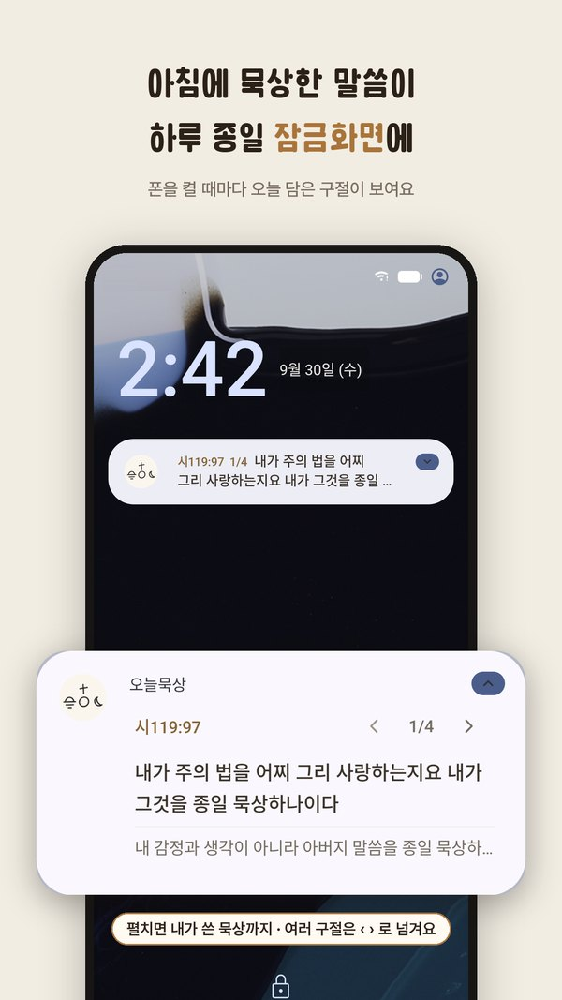
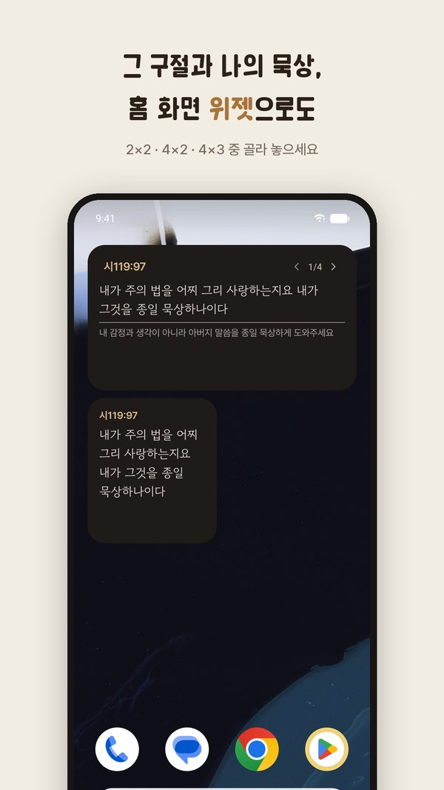
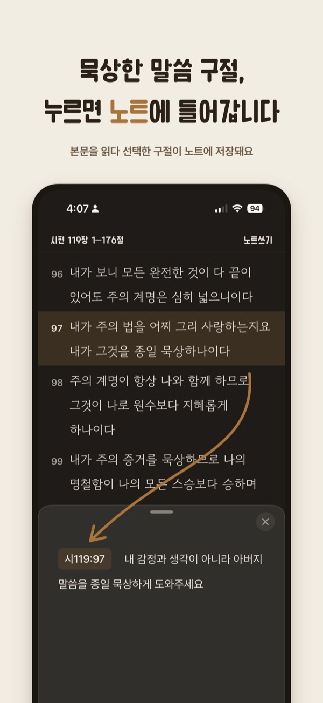

사용 가이드
- 잠금화면담은 구절과 노트가 잠금화면에 보여요.
- 홈 화면 위젯담은 구절과 노트가 홈 화면 위젯에 보여요.
- 오늘 묵상코스를 고르면 날마다 그날 본문이 보여요.
- 설교 묵상교역자가 올린 주일 설교를 받아요.
- 자유 묵상코스 없이 읽고 싶은 본문을 골라 묵상해요.
- 책 묵상 새 기능읽는 책의 글과 성경 구절을 장마다 카드로 적어요.
- 자주 묻는 질문가격, 역본, 기록 저장, 켜는 법
잠금화면
담은 구절과 노트가 잠금화면에 보여요. 구절이 여러 개면 잠금화면에서 넘겨 볼 수 있어요.


홈 화면 위젯
담은 구절과 노트가 홈 화면 위젯에 보여요. 아직 구절을 담지 않은 날에는 위젯을 눌러 묵상을 시작해요.
스크린샷 자리iPhone 홈 화면 위젯

오늘 묵상
매일 묵상 코스와 성경 코스가 있어요. 코스를 고르면 날마다 그날 본문이 보여요. 본문에서 구절을 누르면 노트에 담겨요.

설교 묵상
교회 코드를 넣으면 교역자가 올린 주일 설교를 받아요. 잠금화면에서는 오늘 묵상, 설교 묵상, 자유 묵상, 책 묵상을 바꿔 가며 볼 수 있어요.
스크린샷 자리주일 설교 묵상 화면
자유 묵상
코스 없이 읽고 싶은 본문을 골라 묵상해요.
스크린샷 자리자유 묵상 화면
책 묵상
읽는 책을 등록하고 장마다 카드를 써요. 카드 한 장에 책 속 글, 성경 구절, 생각, 기도를 담아요. 책 속 글은 사진에서 가져오거나 말해서 넣을 수 있어요. 카드를 한 장씩 넘기며 기도해요.
스크린샷 자리책 묵상 · 장별 카드 화면
스크린샷 자리카드를 넘기며 기도하기 화면
자주 묻는 질문
무료인가요?
네. 광고도 없고, 돈을 내야 열리는 기능도 없어요.
후원은 나중에 열 수도 있어요.
어떤 역본인가요?
개역한글판(대한성서공회)이에요.
기록은 어디에 저장되나요?
휴대폰 안에 저장돼요.
Android에서는 Google 자동 백업에 포함될 수 있어요.
잠금화면·위젯은 어떻게 켜나요?
잠금화면
- 본문에서 구절을 노트에 담습니다.
- 담은 구절과 노트가 잠금화면에 보입니다.
- 보이지 않으면 휴대폰 설정에서 오늘묵상 알림을 켭니다. iPhone은 실시간 현황도 켭니다.
홈 화면 위젯
- 홈 화면 빈 곳을 길게 누릅니다.
- iPhone은 「편집」 › 「위젯 추가」, Android는 「위젯」을 누릅니다.
- 오늘묵상을 골라 홈 화면에 놓습니다.
같은 이름의 다른 「오늘묵상」 앱과 같은 앱인가요?
아니요. 이 앱의 이름은 「오늘묵상 – 하루종일 하는 말씀묵상」이고, 개발자는 JISUP CHOI(최지섭)예요.
스토어에서 앱 이름과 개발자를 확인해 주세요.
의견은 어디로 보내나요?
앱의 MY › 만든 사람에게 한마디에서 보낼 수 있어요.
메일은 cjs00oo23@naver.com 으로 보내 주세요.